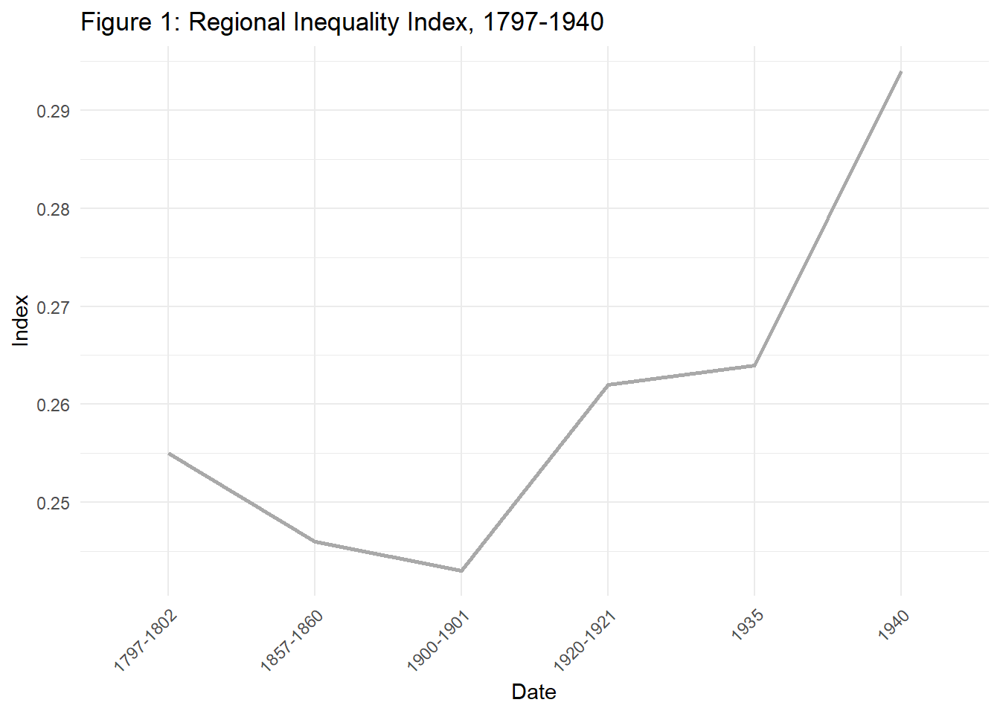
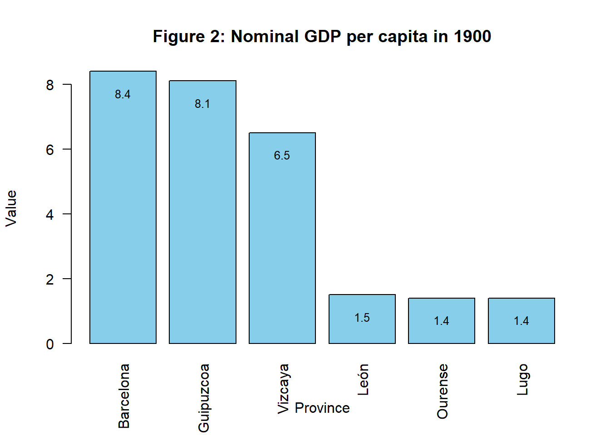

Abstract
In my second year of studying Economics, I wrote a short essay on a topic that engaged me: how Spain industrialized unevenly in the nineteenth century and how this led to increased regional economic inequality. Industrialization was a significant process in history that brought about many important changes in societies, such as the introduction of machinery and advanced technologies, urbanization, capitalism and economic growth, and shifts in mentality and political ideas. However, inequalities became a major issue, as the gap between the rich and the poor widened. This could occur on an individual level due to disparities in income between owners and workers, but it could also be pronounced at a regional level, where industrialization affected some regions first while others remained stagnant. My essay focused on this latter case.
Essay
Industrialization in Spain, whose origin dates to the first decades of the 19th century, represented a decisive point in the contemporary history of the country in terms of regional inequalities. Different studies have shown that the beginning of every modern economic growth spreads unevenly across space, affecting a few regions in a first instance and then increasing inequality (Williamson, 1965). Figure 1 shows this has been the Spanish case. Data provided by A.Carreras and X.Tafunell (2021) has been collected that analyse the trajectory of inequalities in terms of GDP per capita of the Spanish regions from the beginning of industrialization to its peak. For this, they have used the Gini index, an economic indicator that measures the level of inequality, ranging from zero (maximum uniformity) to one (maximum concentration). In it an ascending index is observed from the beginning of the 19th century until 1940.
Catalonia and in a lesser extent the Basque Country were the leading regions that led the beginning of industrialization, while most of the rest of Spain faced various obstacles that prevented a rapid resurgence of this sector. As we can see in Figure 2, in which the three richest and most disadvantaged provinces have been selected in 1900 according to their nominal GDP per capita (NCDGP), Barcelona, Guipúzcoa and Vizcaya are the provinces found in the three first places. At the other extreme we find Cáceres, León and Lugo. With these figures, the differences between “rich” and “poor” are very appreciable.

Catalonia is a region that rapidly became a powerful textile industry in the eighteenth century. On the contrary, in that same century, in the whole of Spain livestock and farming “represented around 70% of the total production” (Llombart, 2013) and it remained mainly agrarian until mid-twentieth century. Why was practically only this region able to catch-up with the main European industrial powers? Before such a revolution, it was a very agrarian society as the rest of Spain. However, along the eighteenth century it experienced social and economic changes, a phenomenon rigorously studied by P.Vilar in his work “La Catalogne dans l’Espagne moderne”, in which the foundations of the economic splendor experienced in the 19th century are set. On the one hand, the demographic increase is relevant. According to data provided by Jordi Nadal (1992), population went from being made up of 508,000 inhabitants in 1717 to 899,531 in 1787. From this, a growth rate of 77.07%1 is deducted. If we compare it with data on the growth of the whole Spain between these two dates, 7,500000 and 10,541.2000 respectively (Nadal, 1975), with a resulting growth rate of 38.79%, we can see that Catalan population has grown to a greater extent in relation to Spain, participating thus in the European demographic boom. This favorable boom for the Catalan economy was accompanied by an increase in agricultural productivity, especially in the vine sector, favored, among others, by the introduction of new irrigation techniques and the limitation of fallow land due to the use of natural fertilizers.
Not only there was an intensive growth, also the cultivated areas increased. “With the exception, perhaps, of Cerdanya, there is no ‘country’ or region of the Principality of which some text from the 18th century does not indicate a more or less marked progress in the area under cultivation […] no region of some importance in the Catalan economic complex escaped this 18th century agricultural renovation” (Vilar,1962). With this information available and considering the Cobb-Douglas production function, it does not seem surprising that Catalonia participated in the process of modern economic growth. The rest of Spain, on the other hand, only managed to grow sparsely at an extensive level throughout 19th century, especially after Madoz disentailment- a liberal measure established in 1854 that disentailed land from communal properties- due to a land breaking process (Nadal, 1975).
According to R. Garrabou and J.Sanz, cultivated area increased from 10.5 to 18.8 hectares between 1800 and 1888. Nevertheless, there was no improvement in productivity until the mid-20th century. This was, on one hand, because a large part of the territory was dedicated to the cultivation of cereals that, due to environmental and meteorological conditions, such as that in Spain it does not rain enough, meant an inefficient use of the soil. On the other hand, there were many small farmers who could not invest in technical-productive improvements due to their scarcity of economic resources, while large owners lacked incentives to do so because they acted as suppliers of land and job seekers for which they received large amounts of income in exchange for small costs (wages were low), from which sufficient profits are deducted and they are not interested in maximizing production by increasing productivity.
As far as agriculture is concerned, having understood that Catalonia experienced a strong expansion while most of the Spanish provinces remained stagnant, it is convenient to analyse the effects these differences had on the industry development. A fundamental element that is present in every industrialization process is structural change, understood as a transfer of economic activity from the primary to the secondary sector, resulting from an increase in agricultural productivity that allows a massive movement from the countryside to the city. If Spain did not experience structural change until the middle of the 20th century, Catalonia did so at the beginning of the previous century. Furthermore, agricultural progress translates into the creation of a manufacturing market. One of the main problems faced by the industry in Spain was the lack of a market for industrial goods because there was not enough demand, an argument developed and defended by different authors, among which Jordi Nadal (1975) stands out. Agriculture is a provider of food, a basic need for the survival of humans, therefore it is understood that the first thing that a society is going to demand is this. If agriculture remains stagnant, food supply fails to meet all demand, which is responsible for a rise in prices that prevents people from demanding, for example, industrial goods. If to this fact we add the paltry wages of small farmers and day laborers, who were most of the population, there is more evidence to reinforce the population’s lack of purchasing power. In Catalonia the opposite happened. Maluquer (1987) has shown how this region benefited from an agricultural expansion accompanied by an increase in income whose distribution was sufficiently egalitarian and wide to supply the entire population.
What has been explained so far concerns the role played by agriculture. However, we may also consider the relationship between relative prices of production factors . We have descriptive evidence from recent studies (Martínez-Galarraga, Prat, 2016) that affirm that in the cotton sector of the Catalan textile industry relative price of labor and capital factors prompted the mechanization of cotton spinning tasks by adopting the Spinning Jenny, imitating the British model. This happened when most of Spain was still agrarian, in addition to the already mentioned reasons, because the existing relationship between factor prices along with their availability encouraged continued growth based on intensive use of the labor factor. As reported by A. Carreras and X. Tafunell (2021), labor and land were abundant at an affordable price, while capital was scarce and expensive.
Once the foundations of the textile industry in Catalonia were established, it grew even more from the second half of the 19th century, a period in which national and international market began to integrate. This process had special repercussions on Catalonia industry. Many studies, analysing the case from the new economic geography models, have shown its first industrialization steps were reinforced by market integration that concentrated and agglomerated the industry in the region. From there arose economies of agglomeration in the productive processes that attracted firms and workers. According to the indications of Jordi Nadal (1975), in 1850 the Catalan spindles represented 6.01 percent of the Spanish set, becoming 18.52 percent in 1861. On the other hand, market integration promoted regional specialization and the interior of Spain specialized in agriculture since that represented their comparative advantage, so this was a disadvantage for the industry. “Summarizing, this period was characterized by a growth in the distance between industrial and agrarian Spain. Castile became an industrial desert. In contrast, Catalonia was Spain’s factory.” (Paluzie, Pons, Tirado, 2002).
In this same period another steel industry gained strength in the Basque Country, becoming the most powerful one in southern Europe. This region was privileged by the existence of a quite useful material -non phosphorous iron ore- that favored by a “double freight” system in which the mineral was exported to Great Britain in exchange for the import of Welsh coal, made possible 6 the emergence of an steel industry. In 1902, the Altos Hornos de Vizcaya company was created, “the largest company in Spain in the 20th century”. The Basque Country stands out by the coal’s possession at a cheap price, an energy source that signified a weakness for the Spanish industrialization due to its scarcity and hence expensive adoption.
It is worth mentioning the textile and metallurgic industries benefited from the protection of the sector through the establishment of tariff measures. For instance, the 1802 law had a relevant weight in the initial development of Catalonia industry since, by preventing the importation of foreign yarns, it promoted the adoption of more modern machines -from the “bergadana” to the “mule” (Nadal,1975). Regarding the Basque Country, tariff measures also played a fundamental role in protecting industry from mainly two countries: the United Kingdom and Germany, which had a considerable steel production. Unfortunately, protectionism had adverse effects on Spanish agriculture since, among others, it maintained food prices high, eliminating incentives to improve and modernize it.
Once we have understood that Catalonia and the Basque Country were the succeeding places to industrialize in the nineteenth century, we must ask ourselves why this made them to achieve greater levels of GDP per capita than the regions that remained agrarian. To this aim, let consider, as economic theory predicts, that the main determinant of GDP per capita growth is labor productivity growth and that this latter depends on efficiency levels and capital deepening. As we know that industrialization is based on an intensive use of capital whereas agrarian societies are labor intensive sectors, and that the use of capital is generally associated with higher efficiency since more output is obtained with lower amounts of inputs, we can deduct that every industrialized region will account with more labor productivity and therefore with a higher GDP per capita. Finally, inequalities among regions were reduced from 1960s following the Williamson´s U-inverted theory. The migratory flow from the most backward to the most prosperous regions that acted as regulator of per capita income and the implementation of public policies made it possible to happen.